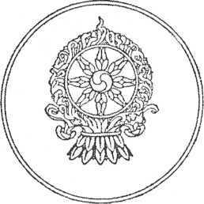

SONUÇ
BARDO ÖĞRETİSİNİN ÖNEMİ
Bir varlığın dinsel uygulaması ne olursa olsun - ister tara, isterse yarım yamalak - ölüm anında azap verici hayaller görünecektir. Bu yüzden, Thödol gereklidir. Çok düşünceye dalanlar, bilinçli prensip bedenden ayrılır ayrılmaz gerçek ortaya çıkar. Hayattayken deneyim kazanmak çok önemlidir. Zira o zamandan gerçek doğalarını tanımış ve bazı deneyimler kazanmış olanlar, Bar- do’da Saf Işık göründüğünde büyük bir güce kavuşurlar.
Hayattayken Mantra’nın Mistik yolu üzerindeki Tanrılar hakkında yapılmış düşünce çalışmaları ve vizyonlar, ayrıca da bunları geliştirme çabaları, Chönyid Bardo’da Sakin ve Öfkeli vizyonlar göründüğü zaman çok yararlı olacaktır. Bu metne bağlanmak, okumak, ezberlemek, tam olarak hatırlamak, kelimeler ve anlamlarının iyice aydınlanması için üç kez okumak, sizi yüz tane cellat kovalasa bile kelimeler ve anlamlarını unutmamaya götürür. Buna “duyma yoluyla Büyük Kurtuluş” denir; çünkü beş büyük günahı işleyenler bile bu öğretiyi kulak yoluyla duydukları taktirde, kurtulacaklarından emindirler.
Öyleyse, bu metni büyük topluluklar içinde okuyun. Bunu bir defa duyan, anlamasa bile, geçiş anında tek kelimesini unutmadan hatırlayacaktır; zira o zaman zeka dokuz kat daha açık olacaktır. Şu halde, bu kitap her canlı
varlığın kulağına duyurulmalıdır, her hastanın başucun- da okunmalıdır, her cansız vücudun yanında okunmalıdır ve her yana yayılmalıdır.
Bu doktrini duyanlar, gerçekten mutlu olurlar. Birçok manevi değerlere sahip olanlar, birçok karanlıktan kurtulanların bu öğretiyle karşılaşmaları zordur. Bu öğreti bilinse bile, anlamak çok zordur. Duyduktan sonra, sadece şüphe hissedilmediği taktirde kurtuluşa kavuşmak mümkündür. O halde, bu doktrini sevin; bu, bütün doktrinlerin temelidir.
“Yalnızca duymakla kurtaran öğreti”, “yalnızca bedene bağlı olmaktan kurtaran” denen, geçici durumda Gerçek ile karşılaştırma deneyi bitmiştir.

“Her şeyin özü birdir ve birbirine benzer; tamamen sakin ve hareketsiz, hiçbir 'olma’ belirtisi göstermeden; körlük ve aldanma cehaleti Aydınlanmayı unutmasından dolayıdır. İşte bu nedenle, Evren fenomenlerini vasıflandıran eylem ve farklılık gibi şartları gerçekten bilemez.” Ashaghosha, Suzuki tercümesi (The Awakening of Faith - inancın Uyandırılması)